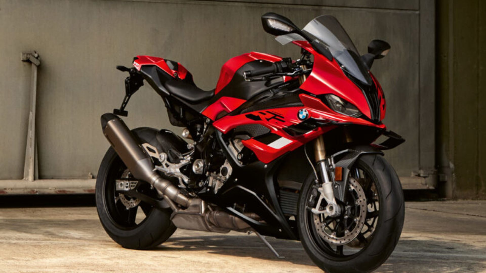

MotoRush
MotoRush
> BMW S1000RR 2024
Altura do assento: 832 mm; distância entre eixos: 1.457 mm; medidas compactas de 2.073 mm (comprimento), 1.205 mm (altura) e 740 mm (largura).
Peso seco: cerca de 197 kg, conferindo excelente relação peso-potência.
Capacidade do tanque: 16,5 litros (reserva de ~4 l), com consumo médio de 15 km/l, proporcionando autonomia superior a 200 km.
A BMW S 1000 RR 2024 é uma superesportiva de alta performance que mistura potência extrema, tecnologia avançada e design aerodinâmico. A seguir, destaco suas principais características.
Motor: quatro cilindros em linha, 999 cc, refrigeração líquida, DOHC, com 4 válvulas por cilindro.
Desempenho: cerca de 210 cv a 13.750 rpm e torque de 113 Nm a 11.000 rpm.
Aceleração: vai de 0 a 100 km/h em aproximadamente 2,9 segundos, alcançando 300 km/h de velocidademáxima.
Versões: Standard, Premium, Premium M e Premium M Carbon.
Pacotes adicionais incluem:
Premium: incorpora itens como controle eletrônico de suspensão (DDC), cruise control, escapamento Akrapovic em carbono, entre outros;
Pacote M: inclui rodas forjadas, bancos M, levers Billet, pinças de freio M;
M Carbon: versões com partes em fibra de carbono, incluindo para-lamas e carenagens laterais